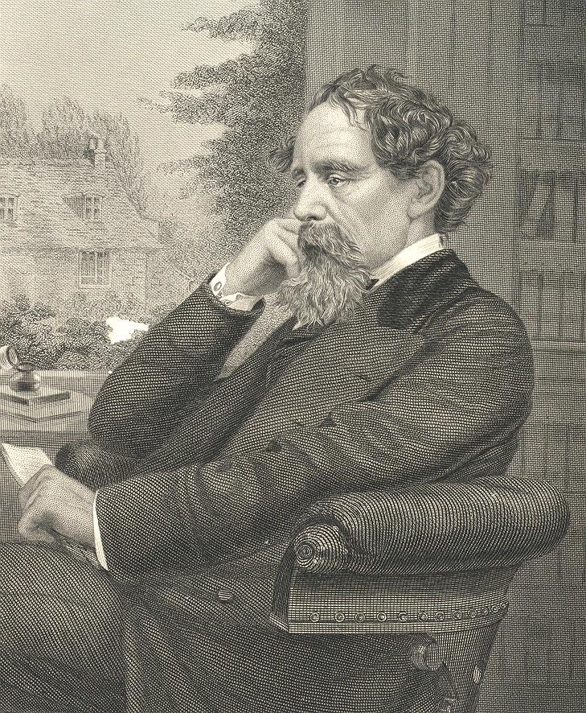

Charles John Huffam Dickens was born February 7, 1812 and died on June 9, 1870) was an English writer and social critic. He created some of the world's best-known stories.
He left school to work in a factory just prior to his father being incarcerated in a debtors' prison. The 12-year-old Dickens worked ten-hour days at Warren's Blacking Warehouse. He earned six shillings a week pasting labels on jars of shoe polish.
Despite his lack of formal education, he edited a weekly journal for 20 years, wrote 15 novels, five novellas, hundreds of short stories and non-fiction articles, lectured and performed readings extensively, was an indefatigable letter writer, and campaigned vigorously for children's rights, education and other social reforms.
source: wikipedia
